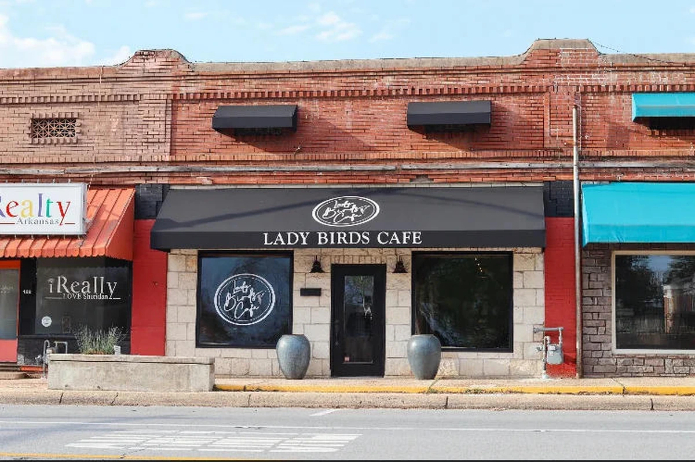
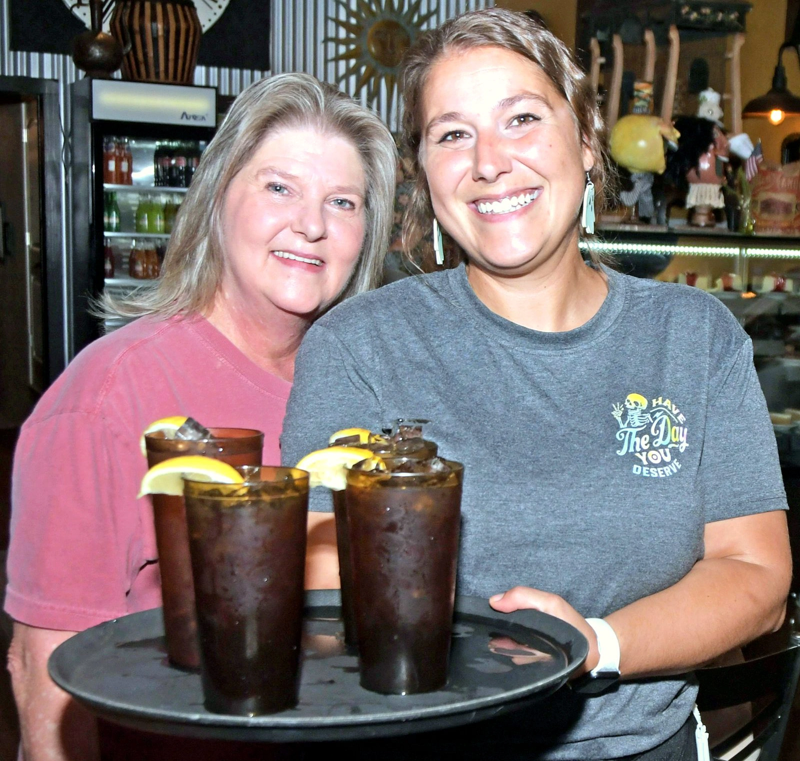
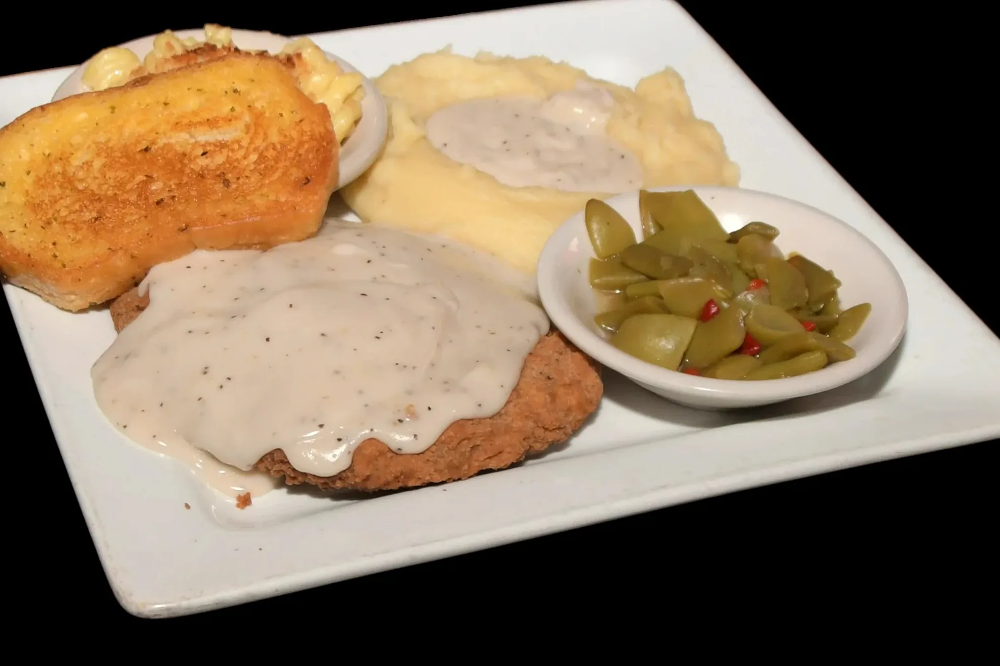
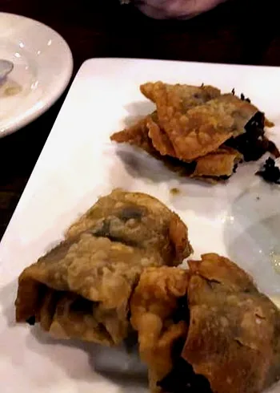

Lady Birds Cafe
Sheridan, Arkansas
Downtown Sheridan. Plate comes out hot.




Kitchen hours
When the door’s open
Public listings. Call if you’re making a drive.
- Monday today10:30a–8p
- TuesdayClosed
- Wednesday10:30a–9p
- Thursday10:30a–9p
- Friday10:30a–9p
- Saturday10:30a–9p
- Sunday11a–4p